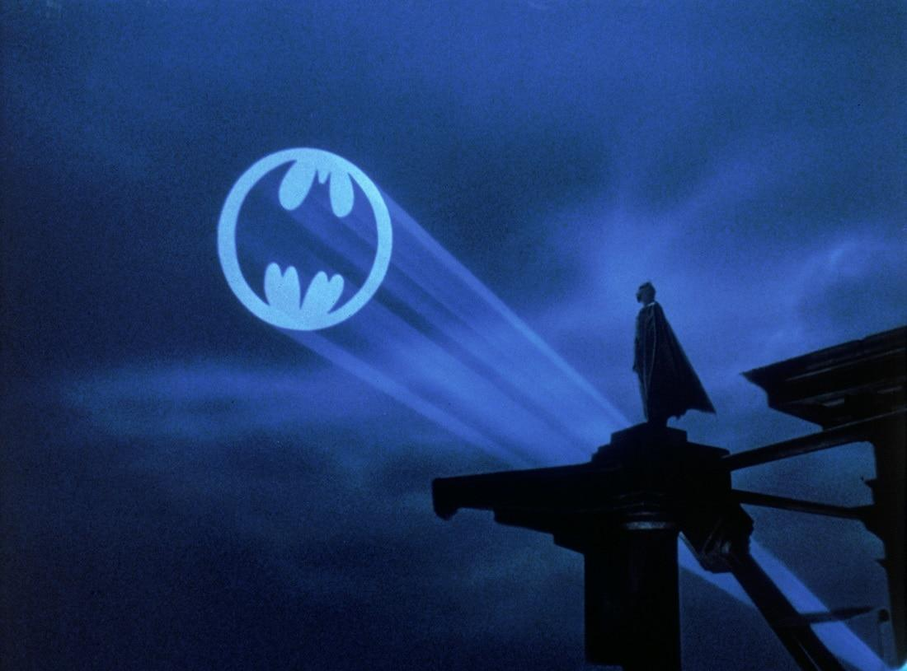
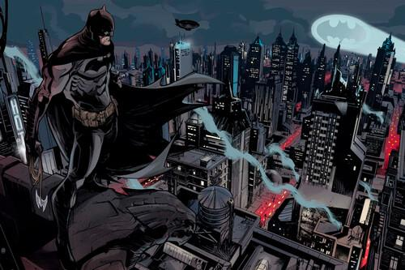
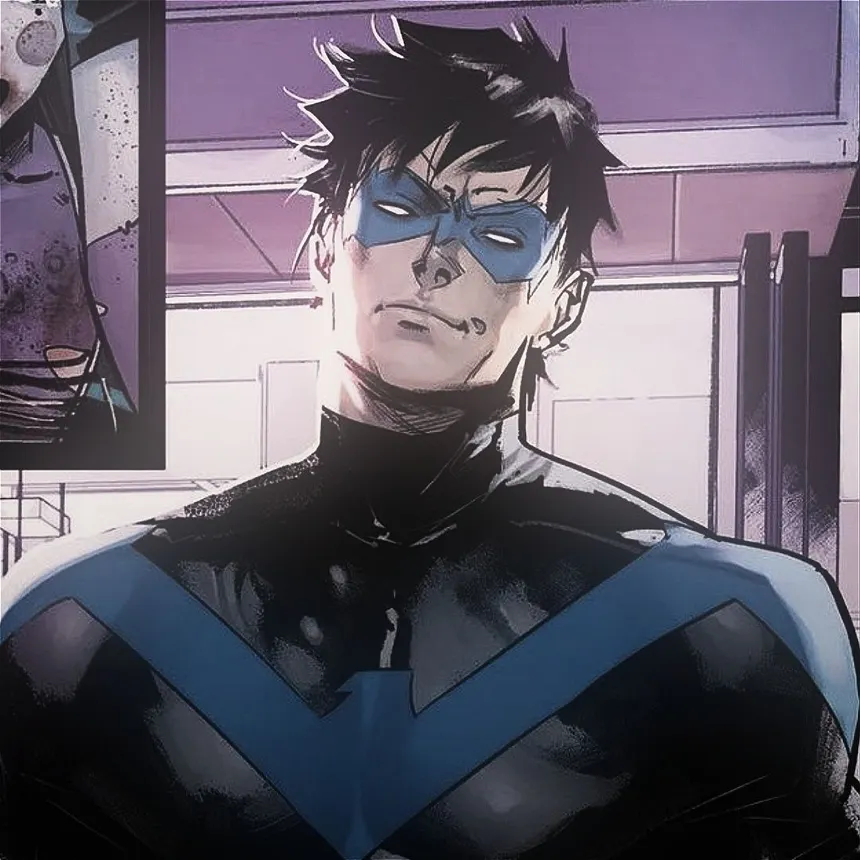
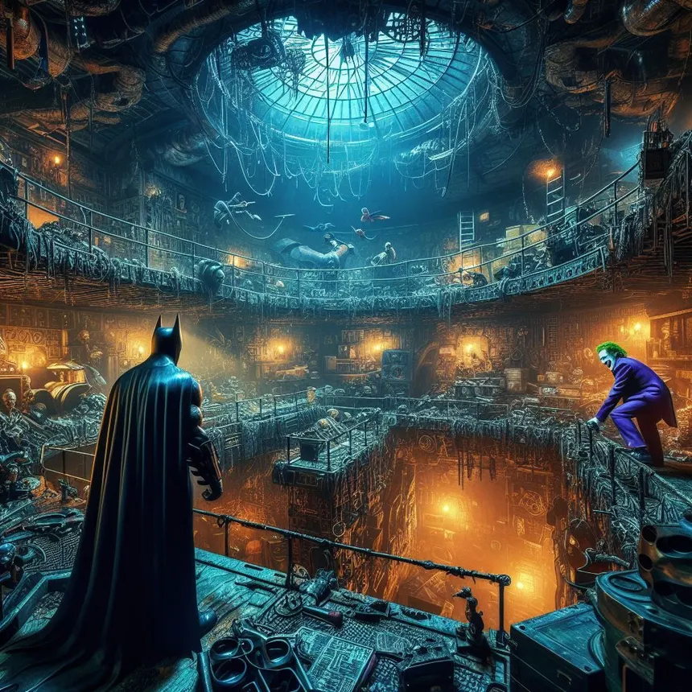

Multimedia de Gotham
Inicio
Personajes
Misiones
Multimedia
Inscripción
Galería de imágenes




Audio
Escucha un audio del portal.
Tu navegador no puede reproducir este audio.
Video
Tu navegador no puede reproducir este video.
PORTAL GOTICO